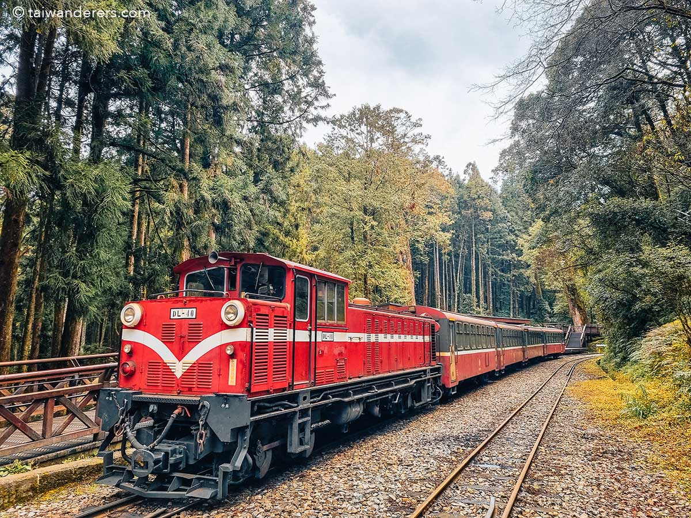

North · Easy
Elephant Mountain 象山
A short, steep stair climb from the MRT to the classic view of Taipei 101.

North · Moderate
Yangmingshan & Qixingshan 陽明山・七星山
Steaming volcanic vents, grassy hills and the highest peak in Taipei, all reachable by city bus.

North · Moderate
Jiufen & Teapot Mountain 九份・茶壺山
Lantern-lit old streets in the hills, then a rocky ridge walk above the sea.
Central · Easy
Sun Moon Lake 日月潭
Taiwan's largest lake, best seen by bike, by boat and from the cable car.

South · Moderate
Alishan 阿里山
Sunrise over a sea of clouds, giant ancient trees and a mountain railway.
No spots match these filters yet. Try another region or difficulty.
About this project
Formosa Trails is a student project for a Generative AI course. The site is built with an AI coding agent that follows a rulebook, AGENTS.md, which describes the page template, naming rules, style guide and writing style. Adding a new place is as simple as asking the AI: "Add Kenting following AGENTS.md."
Every spot page answers the same five questions:
- What to do there
- What to eat there
- How to get there, starting from Taipei Main Station
- When to go, shown on a month-by-month strip
- What it looks like, with a photo gallery
Information was last checked in November 2026. Transport and opening times change, so always confirm on official websites before you go.